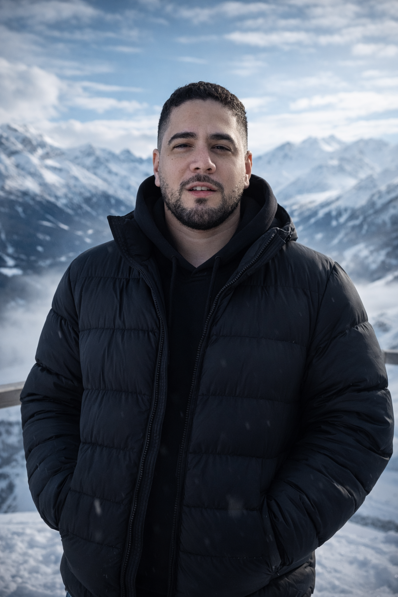

Caribe Austral · Punta Arenas, Chile
Vine del Caribe. Elegí el sur.
Soy José Manuel Simons — abogado, estratega de narrativas y fundador de Caribe Austral. Liderazgo, migración y construcción de autoridad desde una historia real.

Caribe Austral · Punta Arenas, Chile
Soy José Manuel Simons — abogado, estratega de narrativas y fundador de Caribe Austral. Liderazgo, migración y construcción de autoridad desde una historia real.

Dos mundos. Una voz.
Nací en Caracas en 1991 y terminé eligiendo Punta Arenas, en la Patagonia chilena, como el lugar desde donde encender la siguiente etapa. Entre medio: Derecho, activismo LGBTIQ+ en una Venezuela que no estaba lista, ocho millones de venezolanos migrando, Chile, más Chile.
Caribe Austral no es una marca. Es el nombre de ese recorrido. Desde aquí acompaño a líderes, migrantes y profesionales a convertir su historia en autoridad real.
¿Por qué llegaste aquí?
Caribe Austral
Para líderes, migrantes, activistas y profesionales que quieren usar su historia como herramienta real de impacto. El Cuaderno de Frontera es el primer paso — gratis.
Empieza con el Cuaderno →Anteros Legal
Asesoría migratoria, acompañamiento legal estratégico y un abogado que habla como persona. Sin burocracia innecesaria. Con criterio propio.
Ver servicios jurídicos →
Una vez por semana. Sin ruido.
Cada martes, reflexiones sobre liderazgo, narrativa y lo que significa construir algo desde los márgenes. Sin tips de coach. Sin motivación de cartulina.
+ Descarga gratis el Cuaderno de Frontera al suscribirte.



Desde el
fin del mundo
comienza todo.
No estoy aquí para acumular seguidores.
Estoy aquí para que algo de lo que hago
resuene en alguien que lo necesita.